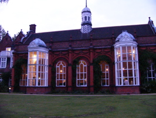

Wedding Details
Here is all the information about the suppliers and items we chose for the wedding.
The Ceremony
The civil ceremony was held in Sidgwick Hall at Newnham College. This is Louise's college from university, and her room was in Sidgwick in her final year there. For information about marrying in Cambridge, you need to contact the Cambridge Register Office.
The Reception
The reception was held in Newnham's college hall (Clough Hall). We also made excellent use of Newnham's beautiful gardens for drinks. Wine was provided by Newnham, Nathan's parents and by Majestic Wine Warehouse in Cambridge.
{kind=link}
The Dress
Louise's dress was from Johanna Hehir in London. Her shoes were custom made by Rainbow Club using red Chinese brocade from MacCulloch and Wallis.The Rings
Louise's engagement ring and wedding ring and Nathan's wedding ring are all from Jess James in London.
The Cakes
The miniature chocolate gateaux were ordered from Patisserie Valerie in London.
The Flowers
The flowers to decorate the ceremony room and reception hall, as well as Louise's bouquet and the buttonholes were prepared by Biggs Florists in Cambridge. The flowers were all themed around red gerberas and germini with white calla lilies.
Hair & Make-up
Louise and Ruth's hair and Louise's make-up were done by Jay at Essensuals in Cambridge.